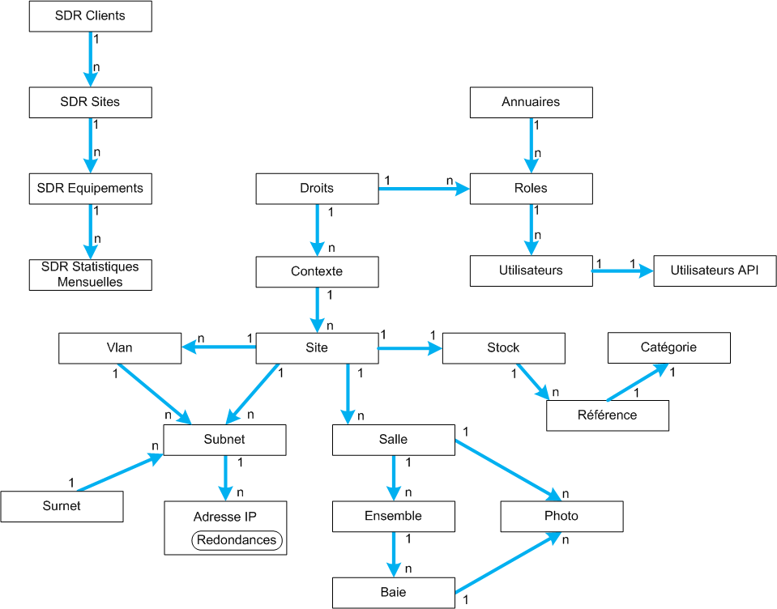

Hiérarchie des Objets
La hiérarchie simple des objets est résumé ci-dessous :
- Un contexte contient plusieurs sites
- Un site contient plusieurs subnets, plusieurs vlans, plusieurs salles, plusieurs stocks
- Un stock contient plusieurs références
- Un subnet contient plusieurs adresses IP, certaines étant des redondances
- Un vlan contient plusieurs subnets
- Une salle contient plusieurs ensembles et plusieurs photos
- Un ensemble contient plusieurs baies
- Une baie contient de 1 à 4 photos
- La norme (Surnet Global) contient plusieurs surnets et/ou subnets
- Pour les SDR : les clients contiennent plusieurs sites
- SDR : les sites contiennent plusieurs équipements (Devices)
- SDR : les équipements possèdent des statistiques mensuelles
- Pour l'authentification : on définit des annuaires locaux ou externes (LDAP)
- Auth : Un annuaire contient plusieurs roles
- Auth : Plusieurs utilisateurs peuvent être membre d'un même role
- Auth : Des droits définissent l'association entre un contexte et les droits du role dans ce contexte
- API : Certains utilisateurs peuvent être autorisés à utiliser les API
